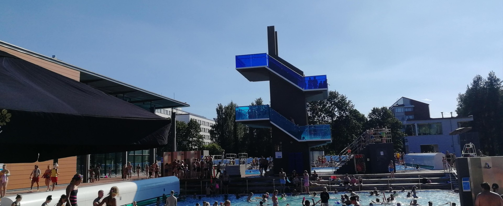
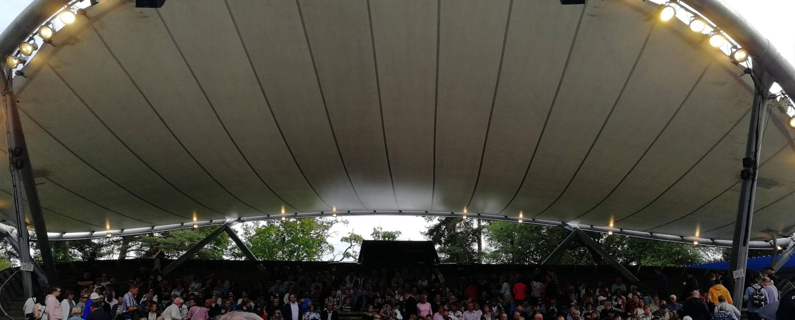
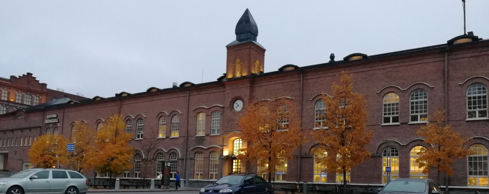
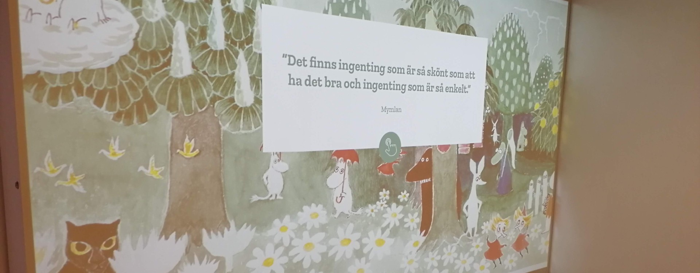

My Bootstrap project
Quiz
Tampere-aiheinen tietovisa!
Minä vuonna avattiin Tampereen maauimala?
Tampereen uintikeskus eli Kalevan uimahalli sijaitsee Kalevan kaupunginosassa ja on Tampereen suurin uimahalli. Hallin yhteydessä sijaitsee Tampereen ainoa maauimala, joka avattiin elokuussa 2018. Maauimalassa on lastenallas, 25 metriä pitkä hyppyallas, 50 metriä pitkä kuntoallas, suihkut, saunat ja kahvio.
Mitä erikoista on Pyynikin kesäteatterissa?
Pyynikin kesäteatterin katsomo on valmistunut 1959, ja oli lajissaan ensimmäinen joka toimi sähköisellä koneistolla. Katsomoon mahtuu 836 katsojaa.
Kuinka paljon työntekijöitä Finlaysonin tehtaalla oli enimmillään 1900-luvun alussa?
Tehtaan perusti skotlantilainen James Finlayson 1820. Puuvillatehtaasta tuli tuhansien ihmisten työpaikka - alueella oli oma poliisi, palokunta, sairaala, koulu ja vanhainkoti. 1800-luvulla käytössä oli jopa omaa rahaa!
Missä Muumimuseo EI ole sijainnut vuosien varrella?
Tampere-talossa sijaitsee maailman ainoa Muumimuseo.
25 vuoden ajan museo sijaitsi pääkirjasto Metson alakerrassa, jonka jälkeen se muutti
väliaikaisesti Tampereen Taidemuseon tiloihin.
Tuloksesi /4 oikein